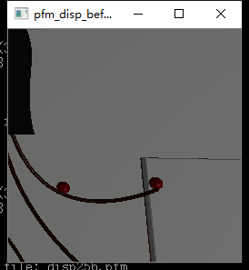
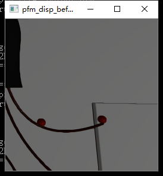
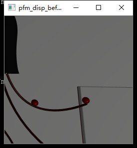

测试
$ bin\trtexec.exe --deploy=data\mnist\mnist.prototxt --model=data\mnist\mnist.caffemodel --output=prob
测试环境
硬件
-
GeForce RTX 2080
-
i3-4160 CPU @ 3.60Hz
- 7.94 GB RAM
软件
- 显卡驱动 430.39
- Windows 10 version 1903
- Cuda 10.0
- cuDnn 7.5.0
- TensorRT 5.1
对比结果
| 模型 | input | batch | fp32 | fp16 | int8 |
|---|---|---|---|---|---|
| ResNet50 | 224x224 | 41 | 37ms | 10ms | 5.7ms |
| cnn-10 | 1080x1920 | 1 | 43ms | 24ms | 8.7ms |
| rcnn-10 | 1080x1920 | 1 | 44ms | 25ms | 8.9ms |
TensorRT 运行结果截图
| 走样输入 | 深度学习反走样输出结果 | 64x SSAA |
|---|---|---|
|  |  |  |
结果细节
ResNet50
224x224x3
取1000次推断平均时间，batch 大小选为41（224x224x41->1080p）
- fp32 ~37ms
- fp16 ~10ms
- int8 ~5.7ms
&&&& RUNNING TensorRT.trtexec # bin\trtexec.exe --deploy=data\resnet50\ResNet50_N2.prototxt --model=data\resnet50\ResNet50_fp32.caffemodel --output=prob --batch=41 --avgRuns=1000 [I] deploy: data\resnet50\ResNet50_N2.prototxt [I] model: data\resnet50\ResNet50_fp32.caffemodel [I] output: prob [I] batch: 41 [I] avgRuns: 1000 [I] Input "data": 3x224x224 [I] Output "prob": 1000x1x1 [I] Average over 1000 runs is 36.5989 ms (host walltime is 37.056 ms, 99% percentile time is 40.3437). [I] Average over 1000 runs is 36.8025 ms (host walltime is 37.323 ms, 99% percentile time is 40.1227). [I] Average over 1000 runs is 37.0368 ms (host walltime is 37.5535 ms, 99% percentile time is 40.8833). [I] Average over 1000 runs is 36.9303 ms (host walltime is 37.4497 ms, 99% percentile time is 40.2044). [I] Average over 1000 runs is 37.3102 ms (host walltime is 37.8786 ms, 99% percentile time is 41.175). [I] Average over 1000 runs is 37.4353 ms (host walltime is 37.8854 ms, 99% percentile time is 41.0356). [I] Average over 1000 runs is 37.217 ms (host walltime is 37.7247 ms, 99% percentile time is 38.4388). [I] Average over 1000 runs is 37.6249 ms (host walltime is 38.1419 ms, 99% percentile time is 41.4488). [I] Average over 1000 runs is 37.7456 ms (host walltime is 38.2448 ms, 99% percentile time is 41.5314). [I] Average over 1000 runs is 37.6224 ms (host walltime is 38.1146 ms, 99% percentile time is 41.2564). &&&& PASSED TensorRT.trtexec # bin\trtexec.exe --deploy=data\resnet50\ResNet50_N2.prototxt --model=data\resnet50\ResNet50_fp32.caffemodel --output=prob --batch=41 --avgRuns=1000
&&&& RUNNING TensorRT.trtexec # bin\trtexec.exe --deploy=data\resnet50\ResNet50_N2.prototxt --model=data\resnet50\ResNet50_fp32.caffemodel --output=prob --batch=41 --fp16 --avgRuns=1000 [I] deploy: data\resnet50\ResNet50_N2.prototxt [I] model: data\resnet50\ResNet50_fp32.caffemodel [I] output: prob [I] batch: 41 [I] fp16 [I] avgRuns: 1000 [I] Input "data": 3x224x224 [I] Output "prob": 1000x1x1 [I] Average over 1000 runs is 9.78154 ms (host walltime is 10.1434 ms, 99% percentile time is 10.9564). [I] Average over 1000 runs is 9.80061 ms (host walltime is 10.1679 ms, 99% percentile time is 10.8871). [I] Average over 1000 runs is 9.85407 ms (host walltime is 10.1652 ms, 99% percentile time is 11.1824). [I] Average over 1000 runs is 9.7751 ms (host walltime is 10.1061 ms, 99% percentile time is 10.3968). [I] Average over 1000 runs is 9.79208 ms (host walltime is 10.1128 ms, 99% percentile time is 10.3916). [I] Average over 1000 runs is 9.97582 ms (host walltime is 10.2224 ms, 99% percentile time is 11.2078). [I] Average over 1000 runs is 10.149 ms (host walltime is 10.419 ms, 99% percentile time is 11.2807). [I] Average over 1000 runs is 10.1625 ms (host walltime is 10.4829 ms, 99% percentile time is 11.2303). [I] Average over 1000 runs is 10.1419 ms (host walltime is 10.4095 ms, 99% percentile time is 11.2451). [I] Average over 1000 runs is 9.81545 ms (host walltime is 10.0941 ms, 99% percentile time is 10.4676). &&&& PASSED TensorRT.trtexec # bin\trtexec.exe --deploy=data\resnet50\ResNet50_N2.prototxt --model=data\resnet50\ResNet50_fp32.caffemodel --output=prob --batch=41 --fp16 --avgRuns=1000
&&&& RUNNING TensorRT.trtexec # bin\trtexec.exe --deploy=data\resnet50\ResNet50_N2.prototxt --model=data\resnet50\ResNet50_fp32.caffemodel --output=prob --batch=41 --int8 --avgRuns=1000 [I] deploy: data\resnet50\ResNet50_N2.prototxt [I] model: data\resnet50\ResNet50_fp32.caffemodel [I] output: prob [I] batch: 41 [I] int8 [I] avgRuns: 1000 [I] Input "data": 3x224x224 [I] Output "prob": 1000x1x1 [I] Average over 1000 runs is 5.74966 ms (host walltime is 6.04008 ms, 99% percentile time is 6.38528). [I] Average over 1000 runs is 5.71288 ms (host walltime is 5.9746 ms, 99% percentile time is 6.29187). [I] Average over 1000 runs is 5.78671 ms (host walltime is 6.10283 ms, 99% percentile time is 6.49056). [I] Average over 1000 runs is 5.74245 ms (host walltime is 6.01866 ms, 99% percentile time is 6.32483). [I] Average over 1000 runs is 5.7246 ms (host walltime is 5.96897 ms, 99% percentile time is 6.26262). [I] Average over 1000 runs is 5.71427 ms (host walltime is 5.94986 ms, 99% percentile time is 6.2911). [I] Average over 1000 runs is 5.76482 ms (host walltime is 6.01559 ms, 99% percentile time is 6.91024). [I] Average over 1000 runs is 5.79972 ms (host walltime is 6.10345 ms, 99% percentile time is 6.41738). [I] Average over 1000 runs is 5.80141 ms (host walltime is 6.10004 ms, 99% percentile time is 6.45424). [I] Average over 1000 runs is 5.75387 ms (host walltime is 6.00265 ms, 99% percentile time is 6.24486). &&&& PASSED TensorRT.trtexec # bin\trtexec.exe --deploy=data\resnet50\ResNet50_N2.prototxt --model=data\resnet50\ResNet50_fp32.caffemodel --output=prob --batch=41 --int8 --avgRuns=1000
项目模型
cnn-10 256x256x31
- Project/pytorch-mono/model/model_256_256.onnx
取1000次推断平均时间，batch 大小选为31（256x256x31->1080p）
- fp32 ~41ms
- fp16 ~
&&&& RUNNING TensorRT.trtexec # bin\trtexec.exe --onnx=data\project\model_256_256.onnx --batch=31 --avgRuns=1000 [I] onnx: data\project\model_256_256.onnx [I] batch: 31 [I] avgRuns: 1000 ---------------------------------------------------------------- Input filename: data\project\model_256_256.onnx ONNX IR version: 0.0.3 Opset version: 9 Producer name: pytorch Producer version: 0.4 Domain: Model version: 0 Doc string: ---------------------------------------------------------------- [I] Average over 1000 runs is 41.0329 ms (host walltime is 41.5606 ms, 99% percentile time is 45.5106). [I] Average over 1000 runs is 41.384 ms (host walltime is 41.9805 ms, 99% percentile time is 44.7077). [I] Average over 1000 runs is 41.7235 ms (host walltime is 42.2927 ms, 99% percentile time is 44.0291). [I] Average over 1000 runs is 42.318 ms (host walltime is 42.8769 ms, 99% percentile time is 46.7965). [I] Average over 1000 runs is 42.7134 ms (host walltime is 43.2284 ms, 99% percentile time is 47.8287). [I] Average over 1000 runs is 42.7245 ms (host walltime is 43.2779 ms, 99% percentile time is 47.6328). [I] Average over 1000 runs is 42.8418 ms (host walltime is 43.4213 ms, 99% percentile time is 47.8085). [I] Average over 1000 runs is 42.9501 ms (host walltime is 43.5097 ms, 99% percentile time is 46.7021). [I] Average over 1000 runs is 43.1244 ms (host walltime is 43.7388 ms, 99% percentile time is 46.721). [I] Average over 1000 runs is 43.3234 ms (host walltime is 43.8563 ms, 99% percentile time is 47.3295). &&&& PASSED TensorRT.trtexec # bin\trtexec.exe --onnx=data\project\model_256_256.onnx --batch=31 --avgRuns=1000
&&&& RUNNING TensorRT.trtexec # bin\trtexec.exe --onnx=data\project\model_256_256.onnx --batch=31 --avgRuns=1000 --fp16 [I] onnx: data\project\model_256_256.onnx [I] batch: 31 [I] avgRuns: 1000 [I] fp16 ---------------------------------------------------------------- Input filename: data\project\model_256_256.onnx ONNX IR version: 0.0.3 Opset version: 9 Producer name: pytorch Producer version: 0.4 Domain: Model version: 0 Doc string: ---------------------------------------------------------------- [I] Average over 1000 runs is 24.7055 ms (host walltime is 25.1759 ms, 99% percentile time is 27.4459). [I] Average over 1000 runs is 24.5021 ms (host walltime is 25.0236 ms, 99% percentile time is 27.277). [I] Average over 1000 runs is 24.6615 ms (host walltime is 25.1073 ms, 99% percentile time is 27.5085). [I] Average over 1000 runs is 24.8448 ms (host walltime is 25.3175 ms, 99% percentile time is 27.521). [I] Average over 1000 runs is 24.7442 ms (host walltime is 25.2699 ms, 99% percentile time is 27.5941). [I] Average over 1000 runs is 24.7661 ms (host walltime is 25.3317 ms, 99% percentile time is 27.9524). [I] Average over 1000 runs is 24.5799 ms (host walltime is 25.0773 ms, 99% percentile time is 28.3853). [I] Average over 1000 runs is 24.339 ms (host walltime is 24.8702 ms, 99% percentile time is 25.3111). [I] Average over 1000 runs is 24.6018 ms (host walltime is 25.1085 ms, 99% percentile time is 27.2757). [I] Average over 1000 runs is 24.373 ms (host walltime is 24.8947 ms, 99% percentile time is 26.6195). &&&& PASSED TensorRT.trtexec # bin\trtexec.exe --onnx=data\project\model_256_256.onnx --batch=31 --avgRuns=1000 --fp16
&&&& RUNNING TensorRT.trtexec # bin\trtexec.exe --onnx=data\project\model_256_256.onnx --batch=31 --avgRuns=1000 --int8 [I] onnx: data\project\model_256_256.onnx [I] batch: 31 [I] avgRuns: 1000 [I] int8 ---------------------------------------------------------------- Input filename: data\project\model_256_256.onnx ONNX IR version: 0.0.3 Opset version: 9 Producer name: pytorch Producer version: 0.4 Domain: Model version: 0 Doc string: ---------------------------------------------------------------- [I] Average over 1000 runs is 8.73495 ms (host walltime is 9.20868 ms, 99% percentile time is 10.3488). [I] Average over 1000 runs is 8.64708 ms (host walltime is 9.09442 ms, 99% percentile time is 10.1545). [I] Average over 1000 runs is 8.61756 ms (host walltime is 9.1009 ms, 99% percentile time is 9.4536). [I] Average over 1000 runs is 8.65811 ms (host walltime is 9.18585 ms, 99% percentile time is 9.25504). [I] Average over 1000 runs is 8.6794 ms (host walltime is 9.17846 ms, 99% percentile time is 9.27763). [I] Average over 1000 runs is 8.70592 ms (host walltime is 9.21263 ms, 99% percentile time is 9.44774). [I] Average over 1000 runs is 8.73309 ms (host walltime is 9.21576 ms, 99% percentile time is 10.0148). [I] Average over 1000 runs is 8.84639 ms (host walltime is 9.22179 ms, 99% percentile time is 10.2569). [I] Average over 1000 runs is 8.81949 ms (host walltime is 9.20646 ms, 99% percentile time is 10.2398). [I] Average over 1000 runs is 8.67455 ms (host walltime is 9.11521 ms, 99% percentile time is 9.55434). &&&& PASSED TensorRT.trtexec # bin\trtexec.exe --onnx=data\project\model_256_256.onnx --batch=31 --avgRuns=1000 --int8
cnn-10 1080x1920x1
- Project/pytorch-mono/model/model_256_256.onnx
&&&& RUNNING TensorRT.trtexec # bin\trtexec.exe --onnx=data\project\model_1080_1920.onnx --avgRuns=1000 [I] onnx: data\project\model_1080_1920.onnx [I] avgRuns: 1000 ---------------------------------------------------------------- Input filename: data\project\model_1080_1920.onnx ONNX IR version: 0.0.3 Opset version: 9 Producer name: pytorch Producer version: 0.4 Domain: Model version: 0 Doc string: ---------------------------------------------------------------- [I] Average over 1000 runs is 42.5376 ms (host walltime is 43.1446 ms, 99% percentile time is 46.0185). [I] Average over 1000 runs is 43.0747 ms (host walltime is 43.689 ms, 99% percentile time is 46.514). [I] Average over 1000 runs is 43.358 ms (host walltime is 44.1039 ms, 99% percentile time is 46.8438). [I] Average over 1000 runs is 43.4793 ms (host walltime is 44.1057 ms, 99% percentile time is 46.8652). [I] Average over 1000 runs is 43.5992 ms (host walltime is 44.2232 ms, 99% percentile time is 46.9056). [I] Average over 1000 runs is 43.5605 ms (host walltime is 44.0431 ms, 99% percentile time is 46.944). [I] Average over 1000 runs is 43.7356 ms (host walltime is 44.245 ms, 99% percentile time is 47.3206). [I] Average over 1000 runs is 43.8808 ms (host walltime is 44.4116 ms, 99% percentile time is 47.3298). [I] Average over 1000 runs is 43.9177 ms (host walltime is 44.4749 ms, 99% percentile time is 47.3356). [I] Average over 1000 runs is 43.9216 ms (host walltime is 44.4726 ms, 99% percentile time is 47.4481). &&&& PASSED TensorRT.trtexec # bin\trtexec.exe --onnx=data\project\model_1080_1920.onnx --avgRuns=1000
&&&& RUNNING TensorRT.trtexec # bin\trtexec.exe --onnx=data\project\model_1080_1920.onnx --avgRuns=1000 --fp16 [I] onnx: data\project\model_1080_1920.onnx [I] avgRuns: 1000 [I] fp16 ---------------------------------------------------------------- Input filename: data\project\model_1080_1920.onnx ONNX IR version: 0.0.3 Opset version: 9 Producer name: pytorch Producer version: 0.4 Domain: Model version: 0 Doc string: ---------------------------------------------------------------- [I] Average over 1000 runs is 23.8831 ms (host walltime is 24.1203 ms, 99% percentile time is 24.3608). [I] Average over 1000 runs is 24.4111 ms (host walltime is 24.6861 ms, 99% percentile time is 27.3841). [I] Average over 1000 runs is 24.2999 ms (host walltime is 24.5427 ms, 99% percentile time is 26.731). [I] Average over 1000 runs is 24.4412 ms (host walltime is 24.7081 ms, 99% percentile time is 27.0674). [I] Average over 1000 runs is 24.4237 ms (host walltime is 24.6792 ms, 99% percentile time is 26.8421). [I] Average over 1000 runs is 24.8017 ms (host walltime is 25.0704 ms, 99% percentile time is 27.8242). [I] Average over 1000 runs is 24.5303 ms (host walltime is 24.7996 ms, 99% percentile time is 26.7191). [I] Average over 1000 runs is 25.0661 ms (host walltime is 25.3921 ms, 99% percentile time is 27.5972). [I] Average over 1000 runs is 24.9305 ms (host walltime is 25.1841 ms, 99% percentile time is 27.854). [I] Average over 1000 runs is 24.7011 ms (host walltime is 24.9569 ms, 99% percentile time is 27.7975). &&&& PASSED TensorRT.trtexec # bin\trtexec.exe --onnx=data\project\model_1080_1920.onnx --avgRuns=1000 --fp16
&&&& RUNNING TensorRT.trtexec # bin\trtexec.exe --onnx=data\project\model_1080_1920.onnx --avgRuns=1000 --int8 [I] onnx: data\project\model_1080_1920.onnx [I] avgRuns: 1000 [I] int8 ---------------------------------------------------------------- Input filename: data\project\model_1080_1920.onnx ONNX IR version: 0.0.3 Opset version: 9 Producer name: pytorch Producer version: 0.4 Domain: Model version: 0 Doc string: ---------------------------------------------------------------- [I] Average over 1000 runs is 8.66529 ms (host walltime is 9.21411 ms, 99% percentile time is 9.0624). [I] Average over 1000 runs is 8.73242 ms (host walltime is 9.309 ms, 99% percentile time is 9.12998). [I] Average over 1000 runs is 8.74873 ms (host walltime is 9.35212 ms, 99% percentile time is 9.2423). [I] Average over 1000 runs is 8.73695 ms (host walltime is 9.25817 ms, 99% percentile time is 9.19722). [I] Average over 1000 runs is 8.74951 ms (host walltime is 9.2688 ms, 99% percentile time is 9.21798). [I] Average over 1000 runs is 8.71137 ms (host walltime is 9.13181 ms, 99% percentile time is 9.40294). [I] Average over 1000 runs is 8.77244 ms (host walltime is 9.22304 ms, 99% percentile time is 10.645). [I] Average over 1000 runs is 8.75664 ms (host walltime is 9.22046 ms, 99% percentile time is 9.9672). [I] Average over 1000 runs is 8.84094 ms (host walltime is 9.32806 ms, 99% percentile time is 10.4063). [I] Average over 1000 runs is 8.95917 ms (host walltime is 9.36222 ms, 99% percentile time is 10.5293). &&&& PASSED TensorRT.trtexec # bin\trtexec.exe --onnx=data\project\model_1080_1920.onnx --avgRuns=1000 --int8
rcnn-10
&&&& RUNNING TensorRT.trtexec # bin\trtexec.exe --onnx=data\project\rcnn_1080_1920.onnx --avgRuns=1000 --fp16 [I] onnx: data\project\rcnn_1080_1920.onnx [I] avgRuns: 1000 [I] fp16 ---------------------------------------------------------------- Input filename: data\project\rcnn_1080_1920.onnx ONNX IR version: 0.0.3 Opset version: 9 Producer name: pytorch Producer version: 0.4 Domain: Model version: 0 Doc string: ---------------------------------------------------------------- [I] Average over 1000 runs is 24.7947 ms (host walltime is 25.4378 ms, 99% percentile time is 27.7331). [I] Average over 1000 runs is 24.7445 ms (host walltime is 25.388 ms, 99% percentile time is 26.7407). [I] Average over 1000 runs is 25.1315 ms (host walltime is 25.7714 ms, 99% percentile time is 28.4338). [I] Average over 1000 runs is 24.9105 ms (host walltime is 25.5266 ms, 99% percentile time is 27.814). [I] Average over 1000 runs is 24.8836 ms (host walltime is 25.5464 ms, 99% percentile time is 27.5691). [I] Average over 1000 runs is 25.1164 ms (host walltime is 25.7185 ms, 99% percentile time is 27.9678). [I] Average over 1000 runs is 25.2527 ms (host walltime is 25.9155 ms, 99% percentile time is 28.072). [I] Average over 1000 runs is 25.2182 ms (host walltime is 25.84 ms, 99% percentile time is 28.8976). [I] Average over 1000 runs is 25.1389 ms (host walltime is 25.6296 ms, 99% percentile time is 27.8299). [I] Average over 1000 runs is 24.8778 ms (host walltime is 25.3639 ms, 99% percentile time is 26.6261). &&&& PASSED TensorRT.trtexec # bin\trtexec.exe --onnx=data\project\rcnn_1080_1920.onnx --avgRuns=1000 --fp16
&&&& RUNNING TensorRT.trtexec # bin\trtexec.exe --onnx=data\project\rcnn_1080_1920.onnx --avgRuns=1000 --int8 [I] onnx: data\project\rcnn_1080_1920.onnx [I] avgRuns: 1000 [I] int8 ---------------------------------------------------------------- Input filename: data\project\rcnn_1080_1920.onnx ONNX IR version: 0.0.3 Opset version: 9 Producer name: pytorch Producer version: 0.4 Domain: Model version: 0 Doc string: ---------------------------------------------------------------- [I] Average over 1000 runs is 8.74936 ms (host walltime is 8.99387 ms, 99% percentile time is 9.86048). [I] Average over 1000 runs is 8.84878 ms (host walltime is 9.1176 ms, 99% percentile time is 10.4693). [I] Average over 1000 runs is 8.97294 ms (host walltime is 9.42228 ms, 99% percentile time is 10.1783). [I] Average over 1000 runs is 9.02047 ms (host walltime is 9.62085 ms, 99% percentile time is 9.66451). [I] Average over 1000 runs is 9.04405 ms (host walltime is 9.64213 ms, 99% percentile time is 9.72186). [I] Average over 1000 runs is 9.08964 ms (host walltime is 9.65024 ms, 99% percentile time is 9.99885). [I] Average over 1000 runs is 8.94115 ms (host walltime is 9.25126 ms, 99% percentile time is 9.94397). [I] Average over 1000 runs is 9.0138 ms (host walltime is 9.43296 ms, 99% percentile time is 9.77478). [I] Average over 1000 runs is 9.08845 ms (host walltime is 9.70892 ms, 99% percentile time is 9.81402). [I] Average over 1000 runs is 9.10858 ms (host walltime is 9.70716 ms, 99% percentile time is 9.93792). &&&& PASSED TensorRT.trtexec # bin\trtexec.exe --onnx=data\project\rcnn_1080_1920.onnx --avgRuns=1000 --int8
&&&& RUNNING TensorRT.trtexec # bin\trtexec.exe --onnx=data\project\rcnn_1080_1920.onnx --avgRuns=1000 [I] onnx: data\project\rcnn_1080_1920.onnx [I] avgRuns: 1000 ---------------------------------------------------------------- Input filename: data\project\rcnn_1080_1920.onnx ONNX IR version: 0.0.3 Opset version: 9 Producer name: pytorch Producer version: 0.4 Domain: Model version: 0 Doc string: ---------------------------------------------------------------- [I] Average over 1000 runs is 43.781 ms (host walltime is 44.2806 ms, 99% percentile time is 47.6637). [I] Average over 1000 runs is 44.2414 ms (host walltime is 44.756 ms, 99% percentile time is 49.923). [I] Average over 1000 runs is 44.6497 ms (host walltime is 45.1768 ms, 99% percentile time is 51.5759). [I] Average over 1000 runs is 44.3383 ms (host walltime is 44.8596 ms, 99% percentile time is 49.2312). [I] Average over 1000 runs is 43.9716 ms (host walltime is 44.5007 ms, 99% percentile time is 48.3427). [I] Average over 1000 runs is 44.1964 ms (host walltime is 44.7082 ms, 99% percentile time is 47.5894). [I] Average over 1000 runs is 44.2688 ms (host walltime is 44.807 ms, 99% percentile time is 48.258). [I] Average over 1000 runs is 44.5854 ms (host walltime is 45.1112 ms, 99% percentile time is 49.9511). [I] Average over 1000 runs is 44.2579 ms (host walltime is 44.7664 ms, 99% percentile time is 50.2773). [I] Average over 1000 runs is 44.5676 ms (host walltime is 45.0882 ms, 99% percentile time is 50.0144). &&&& PASSED TensorRT.trtexec # bin\trtexec.exe --onnx=data\project\rcnn_1080_1920.onnx --avgRuns=1000
实测细节
&&&& RUNNING TensorRT.trtexec # bin\trtexec.exe --onnx=data\project\model_256_256.onnx --avgRuns=1 --pfmDims=3,256,256 --pfmIn=256x256-color.pfm --pfmOut=anti-aliased-image.pfm [I] onnx: data\project\model_256_256.onnx [I] avgRuns: 1 [I] pfmDims: 3,256,256 [I] pfmIn: 256x256-color.pfm [I] pfmOut: anti-aliased-image.pfm ---------------------------------------------------------------- Input filename: data\project\model_256_256.onnx ONNX IR version: 0.0.3 Opset version: 9 Producer name: pytorch Producer version: 0.4 Domain: Model version: 0 Doc string: ---------------------------------------------------------------- processing input... [I] Average over 1 runs is 1.48886 ms (host walltime is 1.7345 ms, 99% percentile time is 1.48886). [I] Average over 1 runs is 2.0439 ms (host walltime is 2.2575 ms, 99% percentile time is 2.0439). [I] Average over 1 runs is 1.42774 ms (host walltime is 1.6747 ms, 99% percentile time is 1.42774). [I] Average over 1 runs is 1.56954 ms (host walltime is 1.7291 ms, 99% percentile time is 1.56954). [I] Average over 1 runs is 1.49696 ms (host walltime is 1.6449 ms, 99% percentile time is 1.49696). [I] Average over 1 runs is 1.48346 ms (host walltime is 1.6521 ms, 99% percentile time is 1.48346). [I] Average over 1 runs is 1.52355 ms (host walltime is 1.6975 ms, 99% percentile time is 1.52355). [I] Average over 1 runs is 1.48278 ms (host walltime is 1.6042 ms, 99% percentile time is 1.48278). [I] Average over 1 runs is 1.48112 ms (host walltime is 1.6171 ms, 99% percentile time is 1.48112). [I] Average over 1 runs is 1.57683 ms (host walltime is 1.7249 ms, 99% percentile time is 1.57683). &&&& PASSED TensorRT.trtexec # bin\trtexec.exe --onnx=data\project\model_256_256.onnx --avgRuns=1 --pfmDims=3,256,256 --pfmIn=256x256-color.pfm --pfmOut=anti-aliased-image.pfm
//TODO: 未处理大小端问题 bool ReadPFMFile(const std::string& fileName, float* buffer) { std::ifstream file(fileName, std::ifstream::binary); assert(file.is_open() && "Attempting to read from a file that is not open."); string bands; int width, height; float scalef, fvalue; file >> bands; file >> width; file >> height; file >> scalef; assert(bands == "Pf" || bands == "PF"); assert(width > 0 && height > 0); int channel = (bands == "Pf" ? 1 : 3); file.seekg(1, file.cur); file.read(reinterpret_cast<char*>(buffer), width * height * channel * sizeof(float)); return true; }; bool processInput(samplesCommon::BufferManager& bufferManager) { size_t width = gParams.pfmDims.d[2]; size_t height = gParams.pfmDims.d[1]; size_t channel = gParams.pfmDims.d[0]; cout << "processing input..." << endl; std::vector<float> fileData(channel * width * height); string path = gParams.pfmIn; ReadPFMFile(path, fileData.data()); auto hostInputBuffer = static_cast<float*>(bufferManager.getBufferByIndex(true, 0)); for (int c = 0; c < channel; ++c) { // The color image to input should be in BGR order for (unsigned j = 0, volChl = height * width; j < volChl; ++j) hostInputBuffer[c * volChl + j] = float(fileData[j * channel + c]); } bufferManager.copyInputToDevice(); return true; } bool IsLittleEndian() { int intval = 1; unsigned char* uval = reinterpret_cast<unsigned char*>(&intval); return uval[0] == 1; } // TODO: 未处理大小端问题 void WritePfmFile(const float* const image_data, int width, int height, int channel, std::string path, float scalef = 1.0f) { assert(!path.empty()); assert(width > 0 && height > 0); assert(channel == 1 || channel == 3); assert(image_data); std::fstream file(path.c_str(), std::ios::out | std::ios::binary); std::string bands; float fvalue; // scale factor and temp value to hold pixel value bands = (channel == 1 ? "Pf" : "PF"); // grayscale // sign of scalefact indicates endianness, see pfm specs if (IsLittleEndian()) scalef = -scalef; // insert header information file << bands << "\n"; file << width << " "; file << height << "\n"; file << scalef << "\n"; file.write(reinterpret_cast<const char*>(image_data), width * height * channel * sizeof(float)); } bool DumpPfm(samplesCommon::BufferManager& bufferManager) { string path = gParams.pfmOut; size_t width = gParams.pfmDims.d[2], height = gParams.pfmDims.d[1], channel = gParams.pfmDims.d[0]; bufferManager.copyOutputToHost(); auto hostOutputBuffer = static_cast<float*>(bufferManager.getBufferByIndex(true, 1)); std::vector<float> fileData(channel * width * height); for (int c = 0; c < channel; ++c) { for (unsigned j = 0, volChl = height * width; j < volChl; ++j) fileData[j * channel + c] = hostOutputBuffer[c * volChl + j]; } WritePfmFile(fileData.data(), width, height, channel, path); return true; }